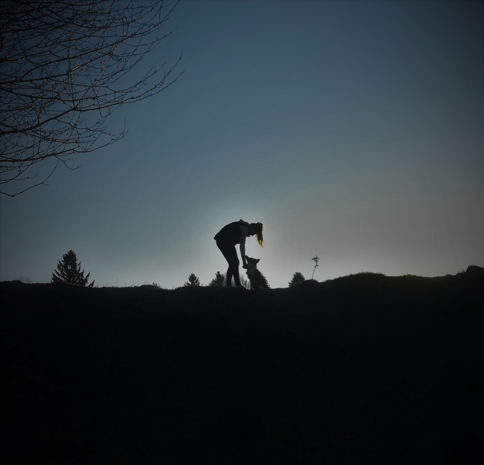
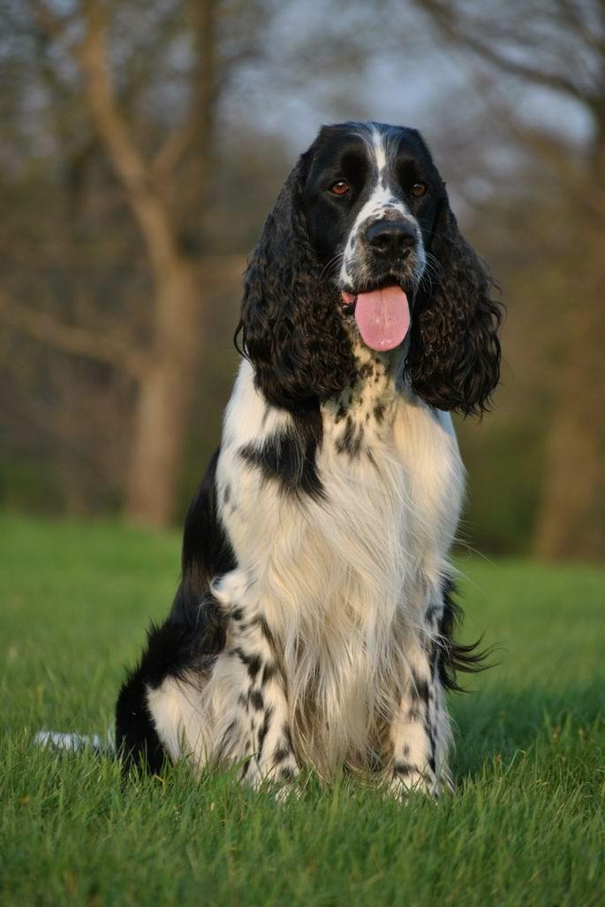
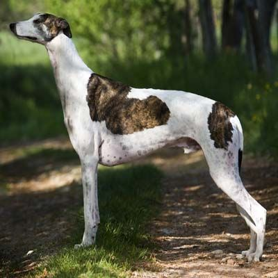
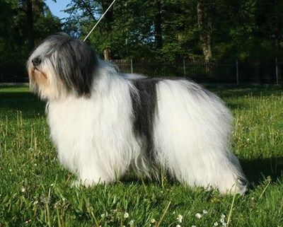

DOMOV
Ahojte
na
tejto
stránke
sa
dozviete
veľa
o
psom
plemene
Borderských
kóliach!
O
nás

Ahojte!
Volám
sa
Martina
Bublincová
a
toto
je
moja
prvá
webová
stránka.
Mám
trinásť
rokov
a
učím
sa
prgramovať.
Na
tejto
stránke
sa
budem
venovať
veľmi
obľúbenému
psiemu
plemenu
Border
Kóliam.
Mám
aj
vlastnú
borderku,
preto
som
si
vybrala
túto
tému.
Moja
Borderka
sa
volá
Chelsea
(Čelsi).
Narodila
sa
12.
marca
2019
a
momentálne
má
jeden
rok.
Jej
sfarbenie
je
trikolór
s
pálením.
Býva
na
záhradke
pri
našom
dome
a
vie
niekoľko
zaujímavých
trikov.
Je
bez
PP
a
nevenujeme
sa
špeciálne
nijakému
psiemu
športu.
Je
milá
a
priateľská,
rada
sa
hrá
s
inými
psami
a
spolčne
trávime
veľa
času
v
prírode.
Je
to
dokonalý
rodinný
pes.
O
plemene
Borderská
kólia
alebo
Border
kólia
je
medzi
ľuďmi
veľmi
obľúbené
plemeno.Je
to
atraktívny
pes
so
živou,
pozornou
a
milou
povahou.
Je
známa
ako
jeden
z
najlepších
ovčiakov
na
svete.
Každého
osloví
nielen
atraktývnym
výzorom
ale
aj
celkovým
vystupovaním.
Dokáže
Vás
pobaviť,
ohromiť
aj
potešiť.
Je
to
skvelý
kamoš
do
každého
počasia!
Bola
vyšľachtená
vo
vysokohorských
podmienkach
na
hraniciach
Anglicka
a
Škótska.
Toto
plemeno
sa
vždy
využívalo
na
nadháňanie
oviec.
Pri
tejto
činnosti
sú
špecifické
ich
technikou.
Počas
práce
stádo
stále
fixujú
pohľadom,
čo
na
ovce
pôsobí
takmer
ako
hypnóza.
Borderky
sa
taktiež
často
prikrčia,
čím
ovciam
sygnalizujú
skok.
Toto
je
ich
špecifická
technika
pri
práci
so
stádom.
Ďaľšou
špecifickou
vlastnosťou
tohto
plemena
je
je
schopnosť
rýchlo
a
okamžite
zaregistovať
zmenu
a
aj
v
skoku
prispôsobiť
smer
pohybu
ich
potrebám.
Ich
predchodcami
sú
zrejme
anglický
špringeršpaniel,
greyhound
a
bradatá
kólia.
Vďaka
špringeršpanielovi
získali
borderky
reflex
prikrčenia
k
zemi,
čím
sa
z
obyčajného
pastierskeho
psa
stal
výkonnejší
pracovný
pes.
Od
greyhounda
získalo
plemeno
rýchlosť,
vytrvalosť
a
tvar
uší.
Neskôr
sa
k
tomuto
krížencovi
primiešala
tiež
krv
bradatých
kólií.



Ako
všetky
pracovné
plemená,
ani
borderská
kólia
nevznikla
cieleným
chovom.
Pastieri
si
vyberali
najlepšie
pasúce
jedince,
na
ktorých
potom
odchovávali
ich
potomkov.
Základným
kritériom
boli
teda
pracovné
vlastnosti
psa
a
nie
jeho
vzhľad.
Aj
po
založení
ISDS
(Medzinárodná
organizácia
ovčiarskych
psov)
v
roku
1906
sa
do
plemennej
knihy
zapisovali
rôzne
jedince
aj
neznámeho
pôvodu,
ktoré
mohli
vylepšiť
vlastnosti
plemena.